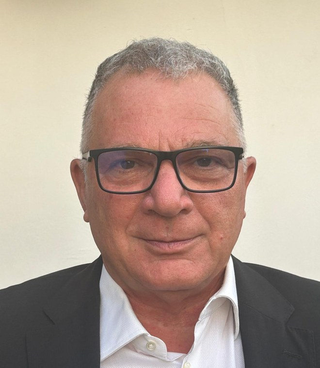

Ascolto e rispetto
Dare spazio ai diversi punti di vista e comprendere le esigenze di chi vive il cambiamento.
Relazioni industriali · Dialogo sociale · Futuro del lavoro
Il valore delle persone. La forza del dialogo. Una visione del cambiamento.
Pietro Fazio interpreta le trasformazioni del mondo del lavoro con uno sguardo che unisce relazioni industriali, analisi economico-sociale e attenzione alle persone. Il suo approccio mette al centro l’ascolto, la disponibilità al confronto e il rispetto dei diversi punti di vista: perché ogni cambiamento organizzativo, energetico, ambientale o digitale coinvolge non soltanto i processi, ma anche le competenze e le relazioni.

Il suo approccio
Le trasformazioni del lavoro non sono mai soltanto tecniche o organizzative: incidono sulle persone, sulle aspettative e sugli equilibri tra interessi differenti. Per questo Pietro Fazio privilegia l’ascolto, la chiarezza e un confronto rispettoso, capace di dare attenzione a esigenze anche diverse.
Disponibilità e attenzione alla dimensione umana accompagnano una lettura concreta delle dinamiche economiche e sociali: prima di individuare una direzione è importante comprendere le esigenze, riconoscere le differenze e mettere a fuoco ciò che può unire.
Dare spazio ai diversi punti di vista e comprendere le esigenze di chi vive il cambiamento.
Favorire confronti chiari, costruttivi e attenti all'equilibrio tra persone e organizzazioni.
Collegare aspetti sociali, economici, ambientali e digitali per leggere le sfide del lavoro di oggi.
Competenze e ambiti di interesse
Cinque prospettive connesse per comprendere come evolvono organizzazioni, professioni e relazioni: dal dialogo tra le parti alle conseguenze della transizione energetica e ambientale e dell’innovazione digitale.
Attenzione alle dinamiche tra imprese, lavoratori e rappresentanze, con particolare riguardo al confronto, alla comprensione delle rispettive esigenze e alla qualità delle relazioni di lavoro.
Ascolto degli interessi in gioco, ricerca dei punti d’incontro e lettura delle differenze, per affrontare questioni complesse con spirito costruttivo e senso di responsabilità.
Lettura dei cambiamenti produttivi e organizzativi e delle loro ricadute su persone, professionalità, relazioni e sostenibilità delle scelte.
Approfondimento delle implicazioni delle transizioni energetiche e ambientali per l’occupazione, i profili professionali, l’evoluzione delle competenze e il confronto nelle organizzazioni.
Attenzione agli effetti della digitalizzazione sui processi, sui ruoli e sulle competenze, con uno sguardo alla dimensione umana dell’innovazione e ai nuovi equilibri nelle relazioni lavorative.
Percorso e competenze interdisciplinari
Il percorso formativo riunisce studi universitari negli ambiti sociale, giuridico ed economico, insieme ad approfondimenti su energia, ambiente, gestione energetica e amministrazione d’impresa. Un patrimonio di conoscenze che contribuisce a una lettura interdisciplinare delle trasformazioni del lavoro.
Regolarmente iscritto all’Albo dei Periti Industriali della Provincia di Latina, al n. 588.
Il primo passo è il confronto
Se vuoi approfondire una questione legata alle relazioni industriali o alle trasformazioni del lavoro, puoi descrivere la tua esigenza a Sinergie. Il percorso e l'eventuale coinvolgimento di professionisti del Network sono valutati e concordati nel rispetto della loro autonomia.
Un primo contatto non costituisce un incarico.
Autonomia professionale
Il profilo è autonomo rispetto a Sinergie S.r.l. La presenza nel network non implica subordinazione o incarichi automatici; eventuali prestazioni riservate sono svolte dai professionisti abilitati secondo le norme applicabili.